On this page
Welcome to Velocity Motors. Sales wants a chatbot, Service wants invoices read automatically, Marketing wants concept-car art by lunchtime and Legal wants to know what "responsible AI" means before anyone ships anything. You are the new AI pit crew. Today you prove all of it is possible in one day, in one Azure subscription, without stepping on the other nineteen crews doing the same thing beside you.
Find your student number on the whiteboard (s01 to s23) and type it into the Pit board box in the top bar of this site. The whole class shares one subscription, and your number keeps your resources yours: every command on every page now rewrites itself with it, like this: rg-ai901-s07.
Part 0The idea in five minutes
Azure AI is sold as dozens of services with dozens of names, and Microsoft renames them regularly. For the exam and for today you need exactly five nouns.
Microsoft.CognitiveServices/accounts with kind AIServices. One resource gives you OpenAI models, Language, Speech, Vision, Content Safety and Content Understanding from one endpoint and one key. The prebuilt tools are now called Foundry Tools (formerly Azure AI services, formerly Cognitive Services).gpt-4.1-mini); a deployment is your running copy of it with a name you choose, a deployment type and a capacity in tokens per minute (TPM). Code always calls the deployment name, never the model name.az login) plus a role such as Foundry User. The Foundry SDK and agents use Entra ID; the classic tools accept either.Code never calls a model. It calls a deployment: your named, metered copy of one.Keep that distinction and half the exam's Foundry questions answer themselves.
Deployment types, in one table
| Type | Where it runs | Pick it when |
|---|---|---|
| Standard | Your resource's region only | Data must stay in-region; low to medium traffic. Today's choice for gpt-4.1-mini. |
| Global Standard | Routed to any Azure region with capacity | Best availability and newest models; data residency is not a constraint. Needed for gpt-audio-mini and FLUX. |
| Data Zone Standard | Within a geography (EU or US) | A middle ground: more capacity than Standard, still inside a legal boundary. |
| Provisioned (PTU) | Reserved throughput you pay for hourly | Predictable latency at high volume. Never for a lab. |
| Batch | Asynchronous, 24-hour window | Millions of non-urgent requests at about half price. |
Expect questions like "a dealership must keep customer data in the United States; which deployment type?" (Data Zone or Standard) or "what does TPM limit?" (tokens per minute per deployment, drawn from a per-region quota). Capacity is set per deployment; quota is shared per model per region per subscription, which is exactly why twenty of us deploy small.
Part 1Open Cloud Shell
Even if you drive the portal today, open Cloud Shell now and leave the tab open. The portal path of Part 3 ends by handing your garage to it, and Part 4 makes your first call from it.
Open portal.azure.com and sign in with the username and Temporary Access Pass the instructor gave you. In the top bar click the Cloud Shell icon (
>_), or go straight to shell.azure.com.Choose Bash. If asked about storage, pick No storage account required (ephemeral). Nothing today needs files to survive between sessions; the pit-board block below rebuilds your variables in two seconds.
Confirm you are in the right subscription. You are already signed in inside Cloud Shell, so
az loginis only needed on your own laptop.az account show --query "{subscription:name, id:id, user:user.name}" -o json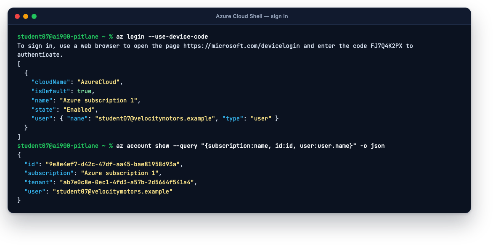
Part 2Your pit board variables
This block defines the names every command uses. Paste it at the start of every lab and every new Cloud Shell session. If you set the pit board above, it already contains your number.
export STUDENT=s07 # your number from the whiteboard
export RG=rg-ai901-$STUDENT # your resource group
export NAME=ai901-$STUDENT-pitcrew # your Foundry resource · must be unique worldwide
export LOC=eastus2 # everyone uses East US 2 today
export PROJECT=proj-ai901-$STUDENT # your Foundry project
echo $RG $NAME $LOC $PROJECTThe resource name becomes a DNS name, so it must be unique across all of Azure. If creation says the name is taken, change pitcrew to anything else and re-export NAME. Keep the ai901-s07- prefix so the instructor can find it.
Part 3Build the garage
Build the garage with clicks. This is the path we recommend: the exam asks about the portal, and seeing each screen makes the four objects (resource group, Foundry resource, project, deployment) real. Every screenshot is from a real run, with the fields you touch numbered.
You will use two websites, and they are not the same thing.portal.azure.com is the Azure portal: every Azure resource, its access and its bill. ai.azure.com is the Foundry portal: projects, models, agents and playgrounds. Step 1 happens in the first; everything after it in the second.
- Resource groupthe folder that holds and costs it all
- Foundry resource + projectthe garage, and your workbench inside it
- Model deploymentthe engine, with a name and a speed limit
- Playgroundthe first test drive
Create your resource group (Azure portal). Open portal.azure.com → Create a resource group, or search the top bar for Resource groups and select + Create. On Basics, leave the shared subscription selected and set:
- 1Resource group name:
rg-ai901-s07 - 2Region: (US) East US 2. It is not in the Recommended list: open the dropdown, type
East US 2in the Filter items box at the top, and pick it.
Why firstThe Foundry wizard can only choose a resource group that already exists. Its "Create new resource group" link just opens this page in another tab, which is where people get lost. Make it first and the wizard is a pick from a list.

Select the Tags tab and add two tags 3:
course=ai901andstudent=s07.Why tagsThe whole class shares this subscription. Tags let race control see who built what, put a price on each student's work, and clean up only what belongs to the course.
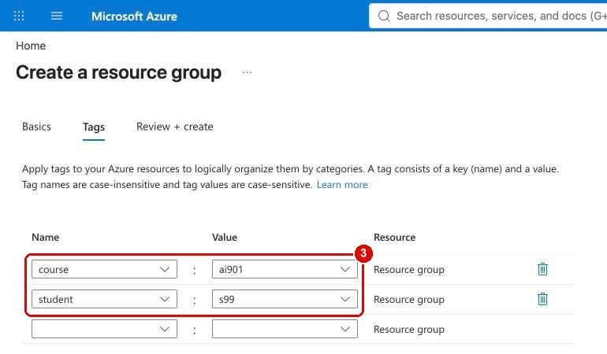
Select Review + create, check the summary, then select Create 4. It takes about two seconds.
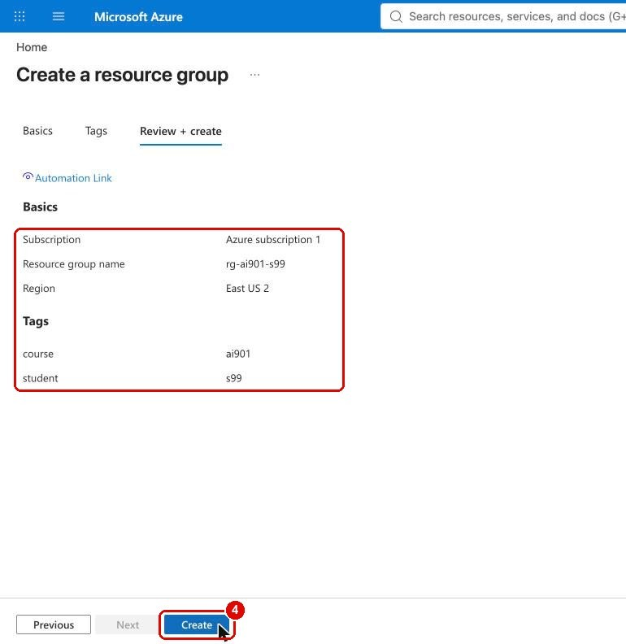
- 1Resource group name:
Open Foundry and start a project. In a new tab open ai.azure.com and check that the New Foundry switch in the top bar is on (the older experience lacks the agent features of Lap 3). Select the project name at the top left, next to Microsoft Foundry, then Create new project 1. If you land straight on a create-project prompt, it is the same form.
Why a projectA project is your workbench: agents, playgrounds and evaluations live in it. It cannot float on its own; it lives inside a Foundry resource, which this same form creates for you.
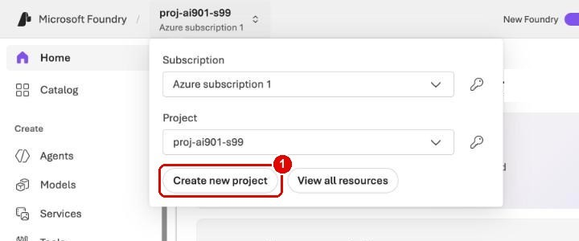
Fill in the project form. Expand Advanced options. Its defaults suit one person on their own subscription, not a class in a shared one, so change all five:
- 1Project name:
proj-ai901-s07 - 2Foundry resource: replace the suggested
proj-…-resourcewithai901-s07-pitcrew, the$NAMEevery Cloud Shell command uses. Name taken? See the Part 2 tip. - 3Region: East US 2 (the default is East US). The audio and image models of Laps 4 and 5 only have quota there.
- 4Resource group:
rg-ai901-s07, the one you just made. Not in the list? See Troubleshooting. - 5Switch off Set up recommended resources. It adds an Application Insights resource for tracing: good in production, an extra bill in a classroom.
Ignore the "No Foundry Local extensions" notice; it is about running models on your own PC. Select Create. After a minute or two an All set dialog appears; select Let's go.
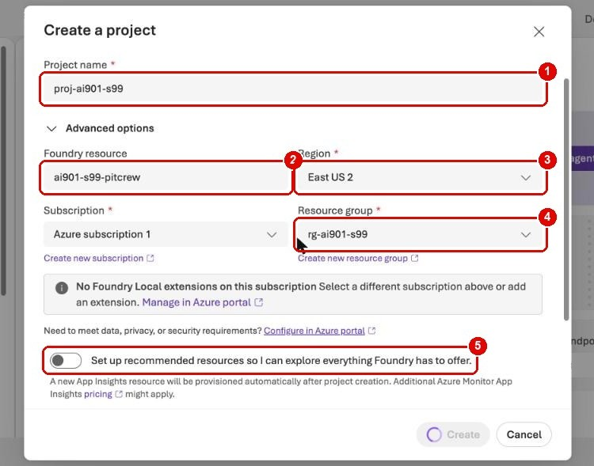
- 1Project name:
Find your key and endpoints. You land on the project Home page. The strip near the bottom shows the API key, the Project endpoint and the Azure OpenAI endpoint.
Why it mattersThe endpoint says where to send a request; the key proves you are allowed to. These are the same values the Cloud Shell path prints. Do not copy the key into notes or chat: step 7 fetches it straight into Cloud Shell.
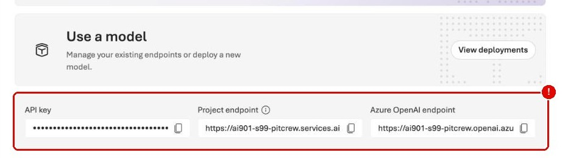
Deploy the model. In the left menu select Models 1, then Deploy 2 → Deploy a base model 3.
Why deployA model in the catalog is a brochure. Nothing can call it until you deploy it: that creates your own named copy, on your resource, with its own capacity.
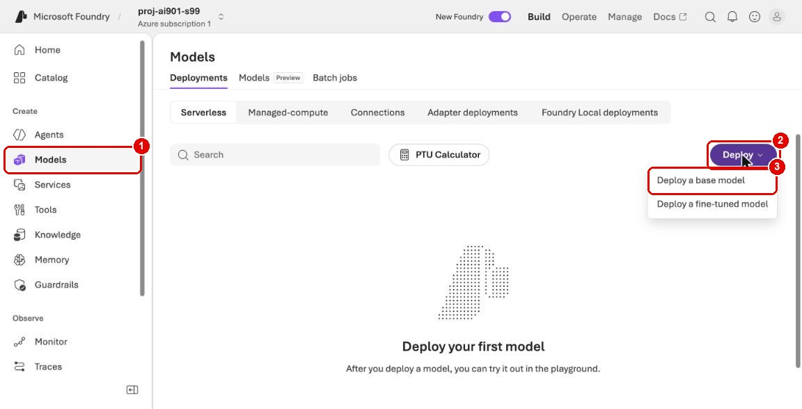
The catalog opens. Type
gpt-4.1-miniin the search box 1. The search is fuzzy and newer models appear first, so scroll to the card named exactly gpt-4.1-mini 2 and open it. The Legacy badge only means newer generations exist. We use this model because it is cheap, reads images, and still lets you settemperature, which Lap 2 needs.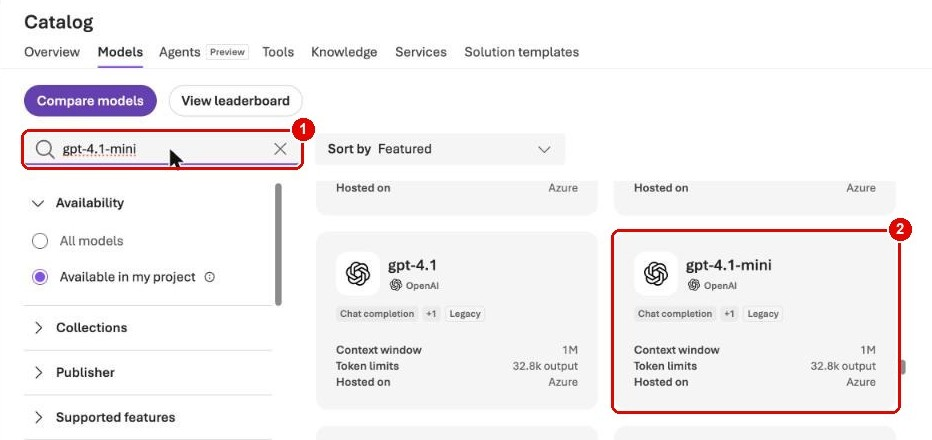
On the model page select Deploy → Custom settings 1, not Default settings, which silently picks Global Standard at 250,000 tokens per minute.
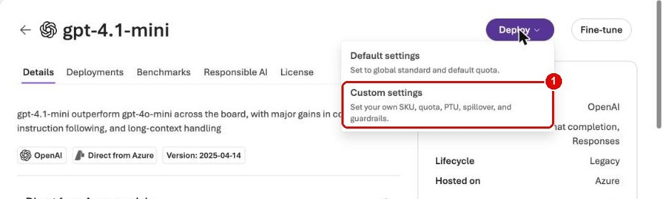
In the Deploy gpt-4.1-mini panel set:
- 1Deployment name:
gpt-4-1-mini(hyphens). This is the name your code and the playground call, not the model's name. - 2Deployment type: Standard. Open the dropdown first and look: it is the exam's list of deployment types, from Global Standard to Provisioned Throughput (the quiz below asks about it).
- 3Tokens per Minute Rate Limit: type
8000(the screenshot shows 10000 from an earlier, smaller class). Leave dynamic quota off. - 4Select Deploy.
Why 8,000The box defaults to 100,000 out of a 200,000 regional pool that the whole class shares. Two people on the default would leave nothing for everyone else; twenty-three of us at 8K use 184K. And 8K tokens a minute is far more than one person can type.
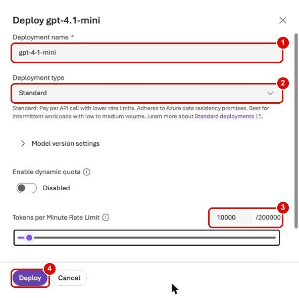
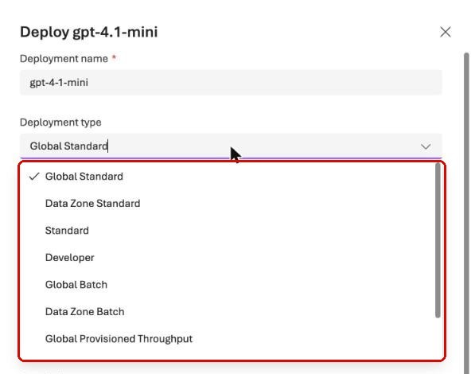
- 1Deployment name:
Take it for a test drive. When the deployment is ready, the playground opens on it. In the chat box type
Who are you, and what can you do for a car dealership?and press Enter: your first model call. The Instructions box on the left is the system message; Lap 2 lives there.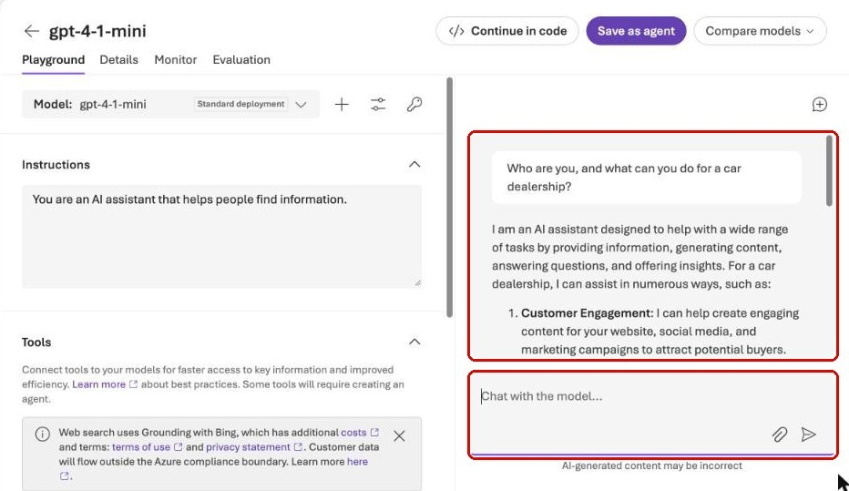
That answer came from your deployment, on your resource, billed to your resource group.Every lap from here builds on these four objects. Name them in your head now: folder, garage, workbench, engine.
Hand the garage to Cloud Shell. Part 4 and the later laps run commands, so connect your shell to what you just built. In the Cloud Shell tab from Part 1, paste the Part 2 block, then:
az cognitiveservices account show -n $NAME -g $RG \ --query "{kind:kind,sku:sku.name,endpoint:properties.endpoint}" -o jsonc export KEY=$(az cognitiveservices account keys list -n $NAME -g $RG --query key1 -o tsv) export ENDPOINT=https://$NAME.cognitiveservices.azure.com export AI_ENDPOINT=https://$NAME.services.ai.azure.com export AOAI_ENDPOINT=https://$NAME.openai.azure.com export PROJECT_ENDPOINT=$AI_ENDPOINT/api/projects/$PROJECT az cognitiveservices account deployment list -n $NAME -g $RG -o table pip install --quiet azure-ai-projects azure-identity azure-ai-textanalytics azure-ai-vision-imageanalysis azure-cognitiveservices-speech openai requestsThe first command should print
"kind": "AIServices"and"sku": "S0"; the deployment list should showgpt-4-1-mini,Standard, capacity8. Ifazsays the resource is not found, the names you typed in steps 1 and 3 do not match$RGand$NAME: fix the export, not the resource.The portal built exactly what the Cloud Shell commands build.Same kind, SKU, custom domain and deployment: we checked both with
az. Clicks and commands are two doors into the same garage.
These screenshots are from 15 November 2026, and Microsoft redraws Foundry often. The nouns do not change: a resource group holds a Foundry resource, a project lives inside the resource, a deployment is your copy of a model, and a playground tries it. If a screen looks different, look for those nouns, or switch to the Cloud Shell tab.
Same garage, by command: six blocks, exact to the letter. You finish with the same four objects and the same shell variables as the portal path; your first call comes in Part 4.
Resource group. A folder for everything you build. Tags let race control find and cost every student's work.
az group create --name $RG --location $LOC --tags course=ai901 student=$STUDENT -o jsonc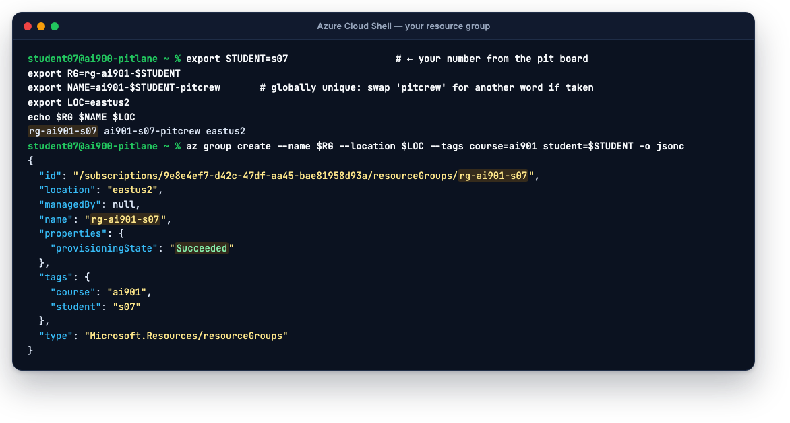
The Foundry resource. One command, four decisions: kind
AIServices(the multi-service kind), SKUS0(pay-per-use; never F0 in a shared subscription), a custom domain equal to the name (that is what gives you a private endpoint URL), and--allow-project-managementso Foundry projects can live inside it. It takes about a minute.az cognitiveservices account create --name $NAME --resource-group $RG --location $LOC \ --kind AIServices --sku S0 --custom-domain $NAME --assign-identity --allow-project-management true --yes \ --query "{name:name,kind:kind,sku:sku.name,location:location,endpoint:properties.endpoint,state:properties.provisioningState}" -o jsonc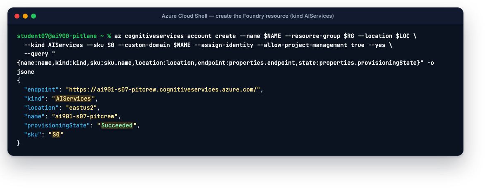
Keys and endpoints. Two keys exist so you can rotate one while the other keeps working. Put them in variables; never paste them into chat, slides or Git.
az cognitiveservices account keys list --name $NAME --resource-group $RG -o jsonc export KEY=$(az cognitiveservices account keys list -n $NAME -g $RG --query key1 -o tsv) export ENDPOINT=https://$NAME.cognitiveservices.azure.com # Vision · Language · Speech · Content Safety export AI_ENDPOINT=https://$NAME.services.ai.azure.com # Foundry API · agents · Content Understanding export AOAI_ENDPOINT=https://$NAME.openai.azure.com # OpenAI models · images · audio echo $ENDPOINT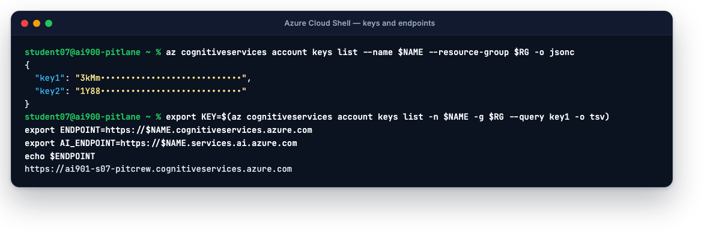
The project. This is what the Foundry portal and SDK connect to.
az cognitiveservices account project create --name $NAME --resource-group $RG --location $LOC \ --project-name $PROJECT --display-name "Velocity Motors AI ($STUDENT)" \ --query "{name:name,state:properties.provisioningState,endpoint:properties.endpoints.\"AI Foundry API\"}" -o jsonc export PROJECT_ENDPOINT=$AI_ENDPOINT/api/projects/$PROJECT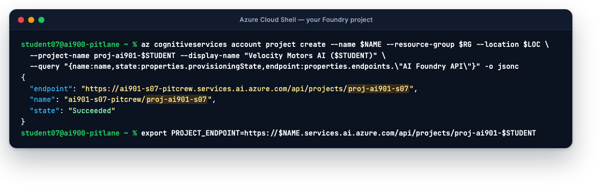
Deploy a model.
gpt-4.1-miniis cheap, fast, understands images and (unlike the gpt-5 family) still lets you settemperature, which Lap 2 needs. Capacity 8 means 8,000 tokens per minute: plenty for one person, and twenty-three of them fit in the 200K regional quota. (The screenshot shows 10, from a smaller class.)az cognitiveservices account deployment create --name $NAME --resource-group $RG \ --deployment-name gpt-4-1-mini --model-name gpt-4.1-mini --model-version 2025-04-14 --model-format OpenAI \ --sku-name Standard --sku-capacity 8 -o none az cognitiveservices account deployment list -n $NAME -g $RG -o table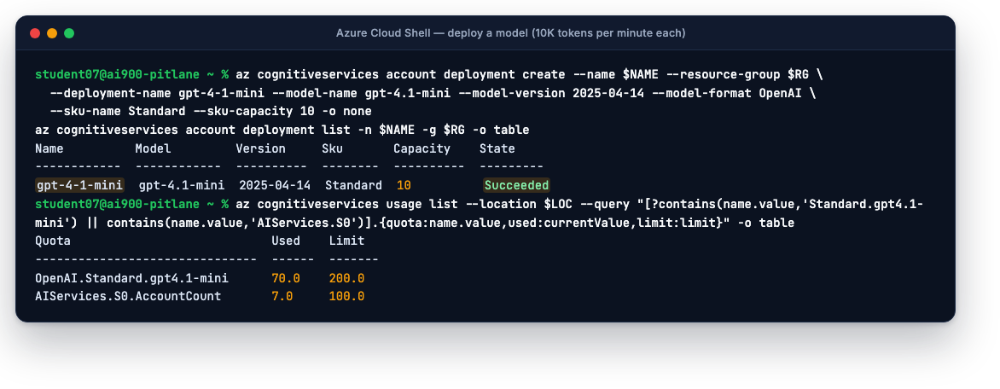
Python libraries for the lightweight apps you will run later. Cloud Shell already has Python 3; this takes about a minute.
pip install --quiet azure-ai-projects azure-identity azure-ai-textanalytics azure-ai-vision-imageanalysis azure-cognitiveservices-speech openai requests python -c "import azure.ai.projects, openai; print('Foundry SDK ready')"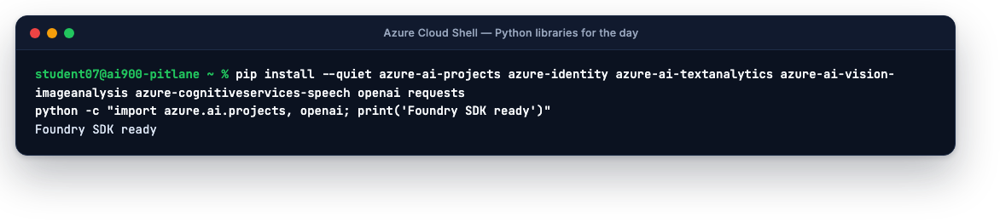
Part 4Your first AI call
Prove the garage works with one HTTP request to Azure AI Vision, asking it to caption a photo from this site. No SDK, no Python, just curl.
Every Foundry Tool call has the same four parts: an endpoint, an API version, your key in a header, and JSON back.Learn the shape once here and you can read every call on this site, and every one on the exam.
curl -s -X POST "$ENDPOINT/vision/v3.2/describe?maxCandidates=1" \
-H "Ocp-Apim-Subscription-Key: $KEY" -H "Content-Type: application/json" \
-d '{"url":"https://varoonsahgal.github.io/az901/images/photos/classic-rambler.jpg"}' | jq .description.captions[
{
"text": "an orange car parked on pavement",
"confidence": 0.4857805073261261
}
]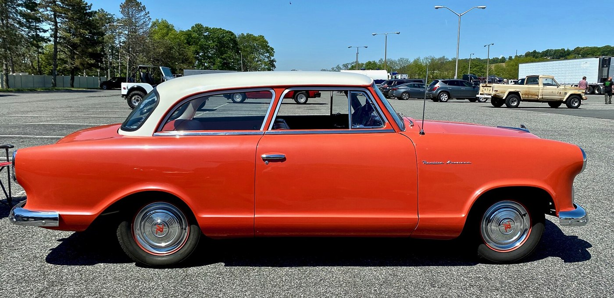
Why v3.2The API version is in the path here (v3.2). Azure AI Vision's newer Image Analysis 4.0 also captions, but only in eight regions (East US, West US, West Europe, North Europe, France Central, Southeast Asia, East Asia, Korea Central). East US 2, chosen because it carries every model we need today, is not one of them, so captions use the v3.2 describe operation, which runs everywhere. Lap 5 uses 4.0 for tags, objects, people and text.
You should now have: a resource group rg-ai901-s07; inside it a Foundry resource ai901-s07-pitcrew with one project and one deployment; variables KEY, ENDPOINT, AI_ENDPOINT, AOAI_ENDPOINT, PROJECT_ENDPOINT set in your shell; and a caption for a 1958 Rambler. To confirm, open portal.azure.com → Resource groups → yours: it should hold two resources, the Foundry resource and its project (below). If ai.azure.com also shows your project, you are out of the pit lane.
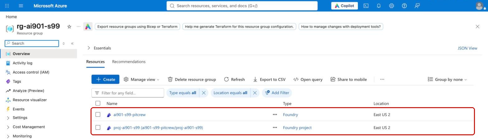
🏁Overtake · if you finish early
No steps given. Each takes five to ten minutes and uses only what is on this page.
- Deploy a second model. Add
gpt-4o-mini(version2024-07-18) as a Standard deployment namedgpt-4o-miniat 5K TPM, then list both deployments. Then delete it:az cognitiveservices account deployment delete. You just did what the portal's Deploy button does. - Ask Vision for more. Call Image Analysis 4.0 on the same photo:
$ENDPOINT/computervision/imageanalysis:analyze?api-version=2024-02-01&features=tags,objects. How many tags come back above 90% confidence? Then addcaptionto the features and read the error: it tells you exactly why the first call used v3.2. - Find the three hosts in the portal. Open your Foundry resource in portal.azure.com and find Keys and Endpoint. Match the endpoints shown there to the three variables you exported. Which one does the Foundry portal use?
Troubleshooting
"The name is already taken" or "AccountAlreadyExists"
Someone in the world already owns that DNS name. Change the last word: export NAME=ai901-$STUDENT-garage (or turbo, your surname…) and re-run from the resource step. Keep the prefix.
"InsufficientQuota" when deploying the model
The regional pool for that model is used up. Check with az cognitiveservices usage list --location $LOC -o table | grep -i gpt4.1-mini. Ask race control; the fix is to lower a capacity somewhere or deploy gpt-4o-mini instead (same commands, model name gpt-4o-mini, version 2024-07-18).
"AuthorizationFailed" or the portal says you cannot create a project
Your account needs three roles on the subscription: Contributor (to create resources), Foundry User, formerly Azure AI User (to use the project and agents), and Cognitive Services User (for the Language and Speech playgrounds). Race control grants all three; a new role takes up to five minutes to arrive.
Portal path: my resource group is not in the Foundry dropdown
The list loads when the Create a project dialog opens, so a group made a moment ago may be missing. Cancel, reopen Create new project, and expand Advanced options again. Still missing? Check the Subscription field above it: the group only appears under the subscription it was created in.
Portal path: I deployed with the default settings
No harm done if you notice now. Open Models, select your deployment, and either edit it down to 8K tokens per minute or delete it and deploy again with Custom settings. Check the deployment name too: code in later laps calls gpt-4-1-mini, with hyphens.
Cloud Shell forgot my variables
Normal: every new Cloud Shell session starts clean. Paste the Part 2 block again, then the five export lines (KEY to PROJECT_ENDPOINT) from the last portal step (or Cloud Shell steps 3 and 4). Thirty seconds.
I created everything in East US instead of East US 2
It will mostly work, but two models we use later (gpt-audio-mini and FLUX) only have quota in East US 2 on this subscription. Delete, purge and recreate: az group delete -n $RG --yes, then az cognitiveservices account purge --name $NAME --resource-group $RG --location eastus (a deleted Foundry resource keeps its name for 48 hours until purged), then set LOC=eastus2 and start Part 3 again. Five minutes.
Quick quiz
A dealership needs a model deployment whose data never leaves the United States, with more capacity than one region offers. Which deployment type?
Data Zone Standard. Standard stays in one region; Global Standard can route anywhere in the world; Data Zone stays within a geography (US or EU). Provisioned is about reserved throughput, not residency.
What is the difference between gpt-4.1-mini and gpt-4-1-mini in this lab?
The first is the model in the catalog. The second is your deployment of it; its name is yours to choose and it is what code and the playground call. Many people name them the same; we used a hyphen so you can see the difference.
Why does the course forbid the free F0 tier?
Azure allows only one F0 resource per service kind per subscription. In a shared subscription the first student would get it and the other nineteen would fail. S0 is pay-per-use and costs cents for a day of lab traffic.
Which authentication does the Foundry SDK use when you call AIProjectClient(endpoint, DefaultAzureCredential())?
Microsoft Entra ID: your signed-in identity plus a role on the resource. No key appears in the code. Keys are still accepted by the classic tool endpoints (Vision, Language, Speech) and we use them there for simplicity.
Pit wall debrief · what you learned
- Microsoft Foundry is the platform; a Foundry resource (kind AIServices) bills and secures it; a project is where you work; a deployment is your copy of a model with a name and a TPM capacity.
- Deployment types trade residency against capacity: Standard, Data Zone, Global Standard, Provisioned, Batch.
- One resource, one key, three host names. Keys authenticate the resource; Entra ID authenticates you.
- In a shared subscription, your student number is your namespace, S0 beats F0, and small deployments keep everyone under quota.
Next: before we build anything clever, we agree on the rules of the road. Lap 1 · Race rules →